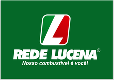

Diagnóstico
Entramos na sua operação e olhamos os números como eles são, não como o relatório diz que são. Ao fim, você recebe um retrato honesto da situação e a lista do que precisa mudar primeiro.
Consultoria financeira empresarial
“Assim como navegadores experientes conduzem navios com segurança em meio às tempestades, nossa consultoria financeira guia sua empresa através das turbulências do mercado rumo ao sucesso financeiro.”
O que fazemos
Cuidamos das suas finanças para que você possa cuidar de coisas mais importantes. São mais de cem ferramentas administrativas exclusivas, testadas em problemas reais de empresas reais. Nada de modelo de prateleira.
Projeção de receitas e despesas com cenários que sobrevivem ao mês seguinte.
Do zero: contas, categorias, ritmo e responsáveis definidos.
Regras escritas para prazo, crédito, compra e aprovação.
Alguém olhando o caixa todo dia — não só no fechamento do mês.
O que de fato move o resultado, separado do que só faz barulho.
Antecipar o aperto com meses de folga para reagir.
Corte com bisturi, não com machado.
Uso de inteligência artificial para automatizar processos administrativos.
Implantação de indicadores diários, semanais e mensais para guiar a gestão.
Como funciona
Diagnóstico, estruturação e acompanhamento. O ritmo de cada etapa depende do tamanho do projeto — um trabalho de consultoria completo costuma ocupar um ano.

Entramos na sua operação e olhamos os números como eles são, não como o relatório diz que são. Ao fim, você recebe um retrato honesto da situação e a lista do que precisa mudar primeiro.
Montamos o fluxo de caixa, as políticas e os controles que faltavam, junto com a sua equipe — para que continuem funcionando depois que a gente sair.
Ficamos ao lado da gestão no dia a dia, com reuniões de rotina e leitura constante dos indicadores. É aqui que a estabilidade vira hábito.
Clientes


Quem conduz
Fundador e presidente da Inovai Consultoria Empresarial. Ex-CIO da Alesat. Mais de 30 anos como executivo em corporações nacionais e multinacionais — Coats, Philips e Alesat.
Consultor em estratégia, posicionamento, gestão, finanças e TI. Membro de conselhos, comentarista e colunista de veículos corporativos, palestrante e professor de pós-graduação na UFRN.
Uma conversa de trinta minutos costuma bastar para saber se faz sentido seguir.